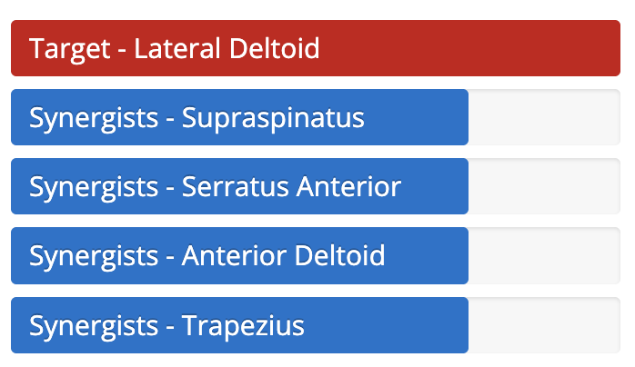
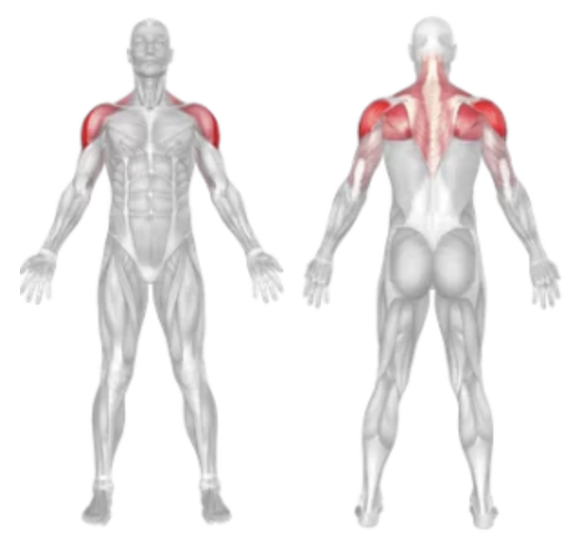

Setup
- Stand upright with a dumbbell in each hand, arms at your sides, and palms facing your body.
- Keep your back straight, chest up, and core engaged.
- Feet should be shoulder-width apart for a stable base.
Execution
- Raise the Dumbbells: Exhale as you raise both dumbbells out to the sides until they are at shoulder height.
- Pause and Squeeze: Hold briefly at the top of the movement, focusing on contracting the side delts.
- Lower with Control: Inhale as you slowly lower the dumbbells back to the starting position.
- Repeat for the desired number of reps.
Tips for Effectiveness
- Maintain Slight Elbow Bend: Keep a soft bend in the elbows throughout to protect the joints.
- Don’t Swing: Use a controlled motion—avoid using momentum or swinging the weights.
- Lead with the Elbows: Your elbows should rise slightly above your wrists at the top.
- Light Weight, High Focus: Lateral raises are more effective with moderate weights and strict form.
Benefits of Dumbbell Lateral Raises
- Targeted Shoulder Growth: Isolates the lateral deltoid for wider-looking shoulders.
- Improves Shoulder Definition: Enhances the V-tapered look.
- Strengthens Stabilizers: Helps improve overhead pressing stability.
- Low Impact: A shoulder-friendly movement when performed correctly.
Muscles Worked in Dumbbell Lateral Raises

